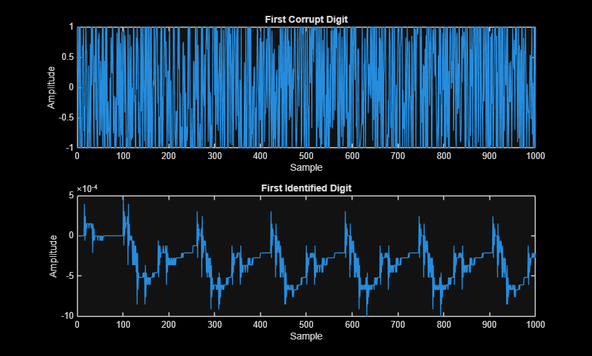
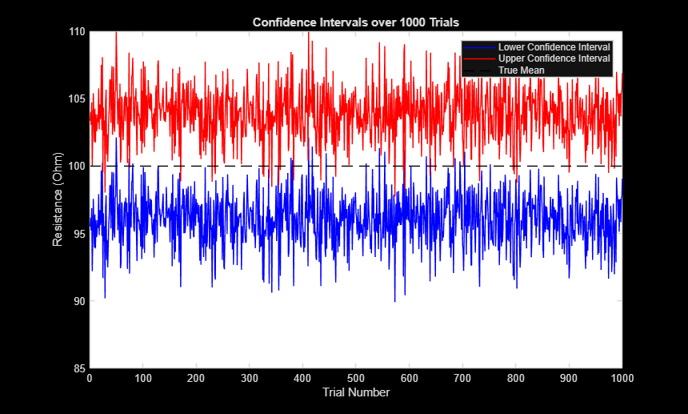
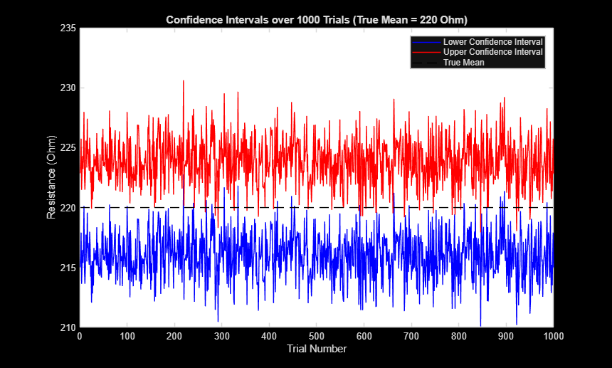

Contents
clc; clear; close all; % Tristin Webb % Final Project % Date: 05/5/2026 fprintf('********************************\n') fprintf('* Final Project *\n') fprintf('********************************\n')
******************************** * Final Project * ********************************
Voice-Code Breaker
==================================================
fprintf('\n=========================================') fprintf("\nI) Voice-Code Breaker:\n"); fprintf('=========================================\n') % 1) Load corrupted voice data file corrupted_file = 'Tristin_Webb.wav'; [voiceData, fs] = audioread(corrupted_file); % Display the info for corrupted file fprintf("\nCorrupted Audio File Information:\n") fprintf('================================\n') info = audioinfo(corrupted_file); disp(info); % Find number of digits in corrupted file num_of_digits = info.TotalSamples / 16000; fprintf("Number of digits in corrupted file:"); fprintf('\n================================\n'); fprintf("%i\n", num_of_digits); % Load template files [template_0, fs] = audioread("Zero.wav"); [template_1, fs] = audioread("One.wav"); [template_2, fs] = audioread("Two.wav"); [template_3, fs] = audioread("Three.wav"); [template_4, fs] = audioread("Four.wav"); [template_5, fs] = audioread("Five.wav"); [template_6, fs] = audioread("Six.wav"); [template_7, fs] = audioread("Seven.wav"); [template_8, fs] = audioread("Eight.wav"); [template_9, fs] = audioread("Nine.wav"); % Store these templates into an array/list templates = [template_0, template_1, template_2, template_3, template_4, template_5, template_6, template_7, template_8, template_9]; % First digit of corrupt file first_corrupt_digit = voiceData(1:16000, 1); % Second digit of corrupt file second_corrupt_digit = voiceData(16001:32000, 1); % Third digit of corrupt file third_corrupt_digit = voiceData(32001:48000, 1); % Fourth digit of corrupt file fourth_corrupt_digit = voiceData(48001:64000, 1); % Find the magnitude of the inner product of each digit and the templates % Using the template and the corrupted file % % Note: Choose the inner product with the greatest magnitude % Find magnitude of inner product (first digit) % ==================================================================== InnerProduct_first_digit = [1:10]; for i = 1:10 InnerProduct_first_digit(i) = abs(dot(first_corrupt_digit, templates(:,i))); end % Find index where the max inner product occurs (first digit) maxMagnitudeFirstDigit = max(InnerProduct_first_digit); index_first_digit = find(InnerProduct_first_digit == maxMagnitudeFirstDigit); first_identified_digit = templates(:, index_first_digit); % sound(first_identified_digit, fs); % ==================================================================== % Find magnitude ofinner product (second digit) % ==================================================================== InnerProduct_second_digit = [1:10]; for i = 1:10 InnerProduct_second_digit(i) = abs(dot(second_corrupt_digit, templates(:,i))); end % Find index where the max inner product occurs (second digit) maxIndexSecondDigit = max(InnerProduct_second_digit); index_second_digit = find(InnerProduct_second_digit == maxIndexSecondDigit); second_identified_digit = templates(:, index_second_digit); % sound(second_identified_digit, fs); % ==================================================================== % Find magnitude of inner product (third digit) % ==================================================================== InnerProduct_third_digit = [1:10]; for i = 1:10 InnerProduct_third_digit(i) = abs(dot(third_corrupt_digit, templates(:,i))); end % Find index where the max inner product occurs (third digit) maxIndexThirdDigit = max(InnerProduct_third_digit); index_third_digit = find(InnerProduct_third_digit == maxIndexThirdDigit); third_identified_digit = templates(:, index_third_digit); % sound(third_identified_digit, fs); % ==================================================================== % Find magnitude of inner product (fourth digit) % ==================================================================== InnerProduct_fourth_digit = [1:10]; for i = 1:10 InnerProduct_fourth_digit(i) = abs(dot(fourth_corrupt_digit, templates(:,i))); end % Find index where the max inner product occurs (fourth digit) maxIndexFourthDigit = max(InnerProduct_fourth_digit); index_fourth_digit = find(InnerProduct_fourth_digit == maxIndexFourthDigit); fourth_identified_digit = templates(:, index_fourth_digit); % sound(fourth_identified_digit, fs); % ==================================================================== % Display decoded voice-code numbers and the magnitude of inner-products fprintf("\nDecoded Voice-Code Numbers:\n"); fprintf("================================\n"); fprintf("First Number: %d (Magnitude: %.2f)\n", index_first_digit-1, maxMagnitudeFirstDigit); fprintf("Second Number: %d (Magnitude: %.2f)\n", index_second_digit-1, maxIndexSecondDigit); fprintf("Third Number: %d (Magnitude: %.2f)\n", index_third_digit-1, maxIndexThirdDigit); fprintf("Fourth Number: %d (Magnitude: %.2f)\n", index_fourth_digit-1, maxIndexFourthDigit); % Combine the identified digits into a single audio signal recovered_audio = [first_identified_digit; second_identified_digit; third_identified_digit; fourth_identified_digit]; % Write the combined audio signal to a file audiowrite('recovered_audio.wav', recovered_audio, fs); % Audio player object to listen to recovered audio player = audioplayer(recovered_audio, fs); player.play(); % Plot the plot for first 1000 samples of first digit and another plot for % first 1000 samples of the corresponding digit that was identified % Plot the first 1000 samples of the first digit and the corresponding identified digit figure; subplot(2, 1, 1); plot(first_corrupt_digit(1:1000)); title('First Corrupt Digit'); xlabel('Sample'); ylabel('Amplitude'); % Plot the first 1000 samples of the identified digit subplot(2, 1, 2); plot(first_identified_digit(1:1000)); title('First Identified Digit'); xlabel('Sample'); ylabel('Amplitude'); % Extra Credit: % Write code so that it could decode a number of any length % ========================================================================
=========================================
I) Voice-Code Breaker:
=========================================
Corrupted Audio File Information:
================================
Filename: 'C:\Users\lunix\OneDrive\Desktop\EE200_Final_Proj\Tristin_Webb.wav'
CompressionMethod: 'Uncompressed'
NumChannels: 1
SampleRate: 16000
TotalSamples: 64000
Duration: 4
Title: []
Comment: []
Artist: []
BitsPerSample: 16
Number of digits in corrupted file:
================================
4
Decoded Voice-Code Numbers:
================================
First Number: 9 (Magnitude: 45.06)
Second Number: 8 (Magnitude: 27.26)
Third Number: 5 (Magnitude: 33.92)
Fourth Number: 0 (Magnitude: 59.74)

Design of an experiment
==================================================
fprintf('\n=========================================') fprintf("\nII) Design of an experiment:\n"); fprintf('=========================================\n') % Random values modeled as Gaussian std_dev = 10; % ohms % Find the mean value of the resistors produced by taking some samples % Use those samples to estimate the mean value % a) 95% confident that the true mean is present within (+/-) 4 ohms of % your estimated mean.... How will you design this experiment? % % How many sample resistors n need to be measured to estimate the mean % value. % ======================================================================== confidence_level = 0.95; % c critical_value = 1.960; % z* margin_of_error = 4; % m % Margin of error formula: (z*)*(std_dev/sqrt(n)) = m % z* = critical value % n = # of samples % m = margin of error % Solve for n n = ceil(((std_dev * critical_value)/margin_of_error)^2); fprintf("\nSamples needed to estimate the mean value:\n"); fprintf('================================\n'); fprintf("%i\n", n); % b) Later the manager tells you the true mean value is 100 ohm. Generate n % random resistor values to simulate the above scenario and estimate the % mean resistor value. % % What is the confidence interval? Does your confidence interval contain % the true mean? % ======================================================================== % Generate random resistor values centered around the true mean true_mean = 100; % ohms sample_resistors = true_mean + std_dev * randn(n, 1); % Find the sample mean sample_mean = mean(sample_resistors); % Determine the confidence interval margin_of_error = critical_value * (std_dev/sqrt(n)); lower = sample_mean - margin_of_error; upper = sample_mean + margin_of_error; fprintf("\nConfidence Interval:\n"); fprintf('================================\n'); fprintf("[%.2f, %.2f]\n", lower, upper); if (true_mean >= lower && true_mean <= upper) fprintf("Confidence Interval contains true mean\n"); else fprintf("Confidence Interval does NOT contain true mean\n"); end % c) Repeat part b 1000 times (do not print out all the resistor values) % % Note: Do not report each mean estimate nor the confidence intervals. Only % need to report how many times, out of 1000 repetitions, is the true mean % contained within the confidence interval? % ======================================================================== num_trials = 1000; count_within_interval = 0; lower_limits = zeros(num_trials,1); upper_limits = zeros(num_trials,1); for i = 1:num_trials sample = true_mean + std_dev * randn(n,1); sample_mean = mean(sample); lower = sample_mean - margin_of_error; upper = sample_mean + margin_of_error; lower_limits(i) = lower; upper_limits(i) = upper; if (true_mean >= lower && true_mean <= upper) count_within_interval = count_within_interval + 1; end end fprintf("\n# of times Confidence Interval contained true mean:\n"); fprintf('=====================================================\n'); fprintf("%d out of 1000 times\n", count_within_interval); % d) Plot three curves in a single figure corresponding to part c % - the first curve should show the lower limit of the confidence interval % - the second curve should show the upper limit of the confidence interval % - the third curve is the constant true mean value % % Note: All the curves should be plotted against the experiment repetition % number, 1, 2, ..., 1000. % % Can you visually inspect the curves to report how many times the confidence interval % does not contain the true mean value? % ======================================================================== figure; plot(1:num_trials, lower_limits, 'b'); hold on; plot(1:num_trials, upper_limits, 'r'); plot(1:num_trials, true_mean * ones(num_trials,1), 'k--'); set(gca, 'Color', 'w'); legend('Lower Confidence Interval', 'Upper Confidence Interval', 'True Mean'); xlabel('Trial Number'); ylabel('Resistance (Ohm)'); title('Confidence Intervals over 1000 Trials'); grid on; % e) Repeat parts b, c, and d if the manager tells you that the true mean % resistor is 220 ohm % ======================================================================== true_mean = 220; % Repeat 1000 trials count_within_interval = 0; lower_limits = zeros(num_trials,1); upper_limits = zeros(num_trials,1); for i = 1:num_trials sample = true_mean + std_dev * randn(n,1); sample_mean = mean(sample); lower = sample_mean - margin_of_error; upper = sample_mean + margin_of_error; lower_limits(i) = lower; upper_limits(i) = upper; if (true_mean >= lower && true_mean <= upper) count_within_interval = count_within_interval + 1; end end fprintf("\n# of times Confidence Interval contained true mean (220 Ohm):\n"); fprintf('==============================================================\n'); fprintf("%d out of 1000 times\n", count_within_interval); % Plot the Confidence Interval curves for true mean = 220 figure; plot(1:num_trials, lower_limits, 'b'); hold on; plot(1:num_trials, upper_limits, 'r'); plot(1:num_trials, true_mean * ones(num_trials,1), 'k--'); set(gca, 'Color', 'w'); legend('Lower Confidence Interval', 'Upper Confidence Interval', 'True Mean'); xlabel('Trial Number'); ylabel('Resistance (Ohm)'); title('Confidence Intervals over 1000 Trials (True Mean = 220 Ohm)'); grid on;
========================================= II) Design of an experiment: ========================================= Samples needed to estimate the mean value: ================================ 25 Confidence Interval: ================================ [102.32, 110.16] Confidence Interval does NOT contain true mean # of times Confidence Interval contained true mean: ===================================================== 950 out of 1000 times # of times Confidence Interval contained true mean (220 Ohm): ============================================================== 949 out of 1000 times

